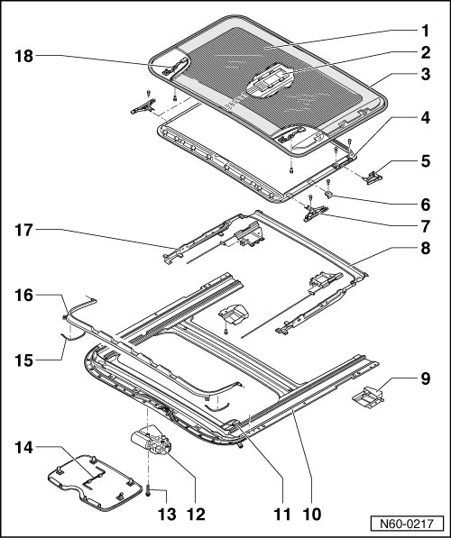

Sunroof With Solar Panel Assembly Overview
Sunroof with Solar Panel
Sunroof with Solar Panel Assembly Overview

1 Sunroof solar panel (one-piece safety glass)
• Sunroof Solar Panel, Removing, refer to --> [ Sunroof Solar Panel ] Sunroof with Solar Panel
• Sunroof Solar Panel, Installing, refer to --> [ Sunroof Solar Pane ] Sunroof with Solar Panel
• Sunroof Solar Panel, Adjusting, refer to --> [ Sunroof Solar Panel, Adjusting Height ] Sunroof Solar Panel, Adjusting Height
2 DC voltage converter
• Removing, refer to --> [ DC Voltage Converter ] Sunroof with Solar Panel
3 Panel seal
• Panel Seal, Replacing, refer to --> [ Panel Seal, Replacing ] Panel Seal, Replacing
4 Panel trim
• Panel Trim, Removing and Installing, refer to --> [ Solar Panel Trim ] Sunroof with Solar Panel
5 Guide piece
• For water channel.
6 Angle bracket
• For panel trim.
7 Slider
• For panel trim.
8 Water channel
• Component of assembly unit, cannot be replaced individually.
9 End piece
• Use butyl adhesive sealing cord AKL 450 005 05 for sealing.
10 Assembly unit
• Assembly Unit, Removing, refer to --> [ Installation Unit ] Sunroof with Solar Panel
• U-frame (with guide channels) - The guide channels can be lubricated if necessary, but only use special grease G 000 450 02. Otherwise, proper function cannot be guaranteed.
11 Solar contact
• Secured on assembly unit.
• Removing, refer to --> [ Solar Contact in Assembly Unit ] Sunroof with Solar Panel
12 Electrical drive motor
• Removing, refer to --> [ Drive Motor for Sunroof ] Sunroof with Solar Panel
• Drive Motor, Neutral Position, Adjusting.
13 Bolt
• Quantity: 3
• 3.5 Nm
14 Emergency operation hex key
• Clipped in on E-drive motor cover.
• Discontinued in 22.2006
15 Spring
• To open wind deflector.
16 Wind Deflector
• Removing, refer to --> [ Wind Deflector ] Sunroof with Glass Panel
17 Slotted guide rail
• Component of assembly unit, cannot be replaced individually.
18 Solar contact
• Secured to panel.
• Removing, refer to --> [ Solar Contact in Solar Panel ] Sunroof with Solar Panel